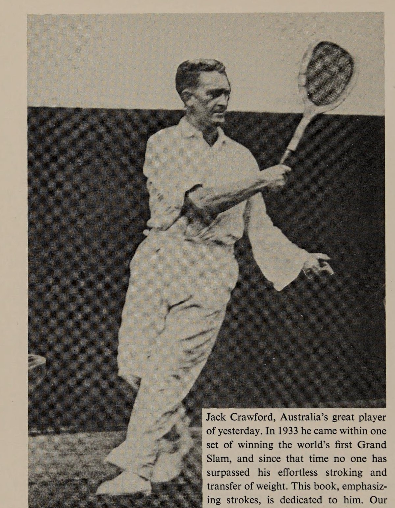
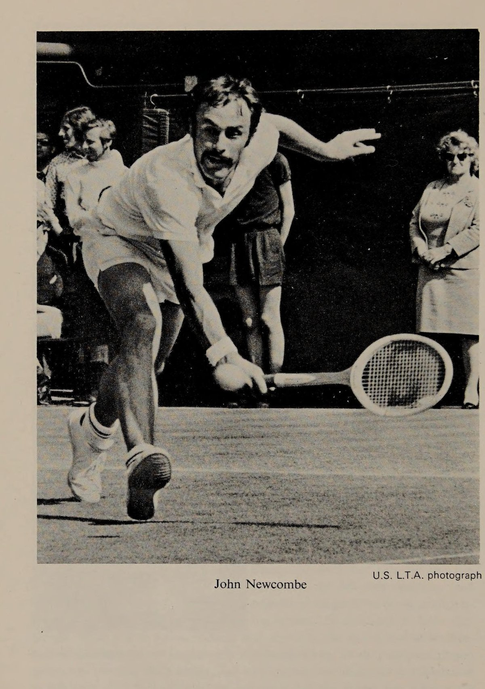
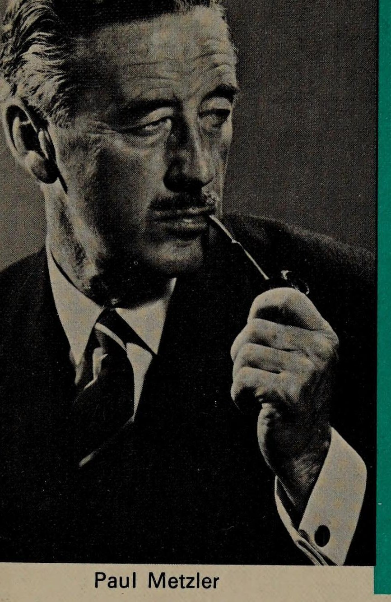

📖 Lời đề tặng, Lời tựa và Lời giới thiệu
📖 Lời tựa từ Esca Stephens
Đây là cuốn sách về quần vợt lôi cuốn và sâu sắc nhất mà tôi từng được đọc. Ngay từ những ngày đầu, tài năng hứa hẹn của Paul Metzler đã thu hút sự chú ý đặc biệt của tôi; chọn quần vợt làm niềm đam mê cả đời, ông đã trở thành một nhà nghiên cứu tường tận và sắc sảo của môn thể thao này.
Xương sống của nền quần vợt ở mọi quốc gia chính là hàng ngàn tay vợt phong trào và bán chuyên tham gia tranh tài tại vô số giải đấu, cúp câu lạc bộ diễn ra vào mỗi dịp cuối tuần. Đây là tác phẩm được viết trực tiếp dành cho những đấu thủ đó, bởi một người sinh ra và trưởng thành từ chính hàng ngũ của họ.
Tác giả có đầy đủ tư cách và trải nghiệm đỉnh cao để chắp bút tác phẩm này. Bảng thành tích thi đấu phong phú của ông quá dài để liệt kê hết nơi đây; cá nhân tôi, cùng nhiều vị tiền bối khác, đã có vinh dự trao tặng ông vô số chiếc cúp vô địch kéo dài từ năm 1929 cho đến tận hôm nay. Cách ông trình bày các nguyên lý và sự thật chiến thuật một cách rành mạch, khoa học và thực tế sẽ chinh phục bạn ngay khi lật giở những trang đầu tiên.
Các tay vợt trẻ thường thi đấu chập chờn do thiếu hụt vốn trải nghiệm thực chiến. Và đây chính là kho tàng kinh nghiệm vô giá được đúc kết rõ ràng trên từng trang giấy. Cuốn sách này chứa đựng vô vàn chỉ dẫn đắt giá đủ sức thu hút bất kỳ ai khao khát nâng cấp trình độ quần vợt của mình, dù là để thi đấu đỉnh cao hay giao lưu câu lạc bộ. Thậm chí ngay cả các tay vợt hàng đầu của chúng ta cũng sẽ tìm thấy nhiều bài học quý giá để áp dụng.
Tôi hiểu rằng một lời tựa chỉ thực sự hữu ích khi súc tích. Đây là một tác phẩm kiệt xuất — đóng góp to lớn vào việc nâng tầm quần vợt ở mọi nơi về mặt kỹ pháp, bản lĩnh thi đấu và tinh thần thượng võ thể thao cao thượng.
🏆 Lời giới thiệu từ John Newcombe
Bên cạnh những tay vợt nhà nghề và các tuyển thủ quốc tế, có hàng chục ngàn tay vợt trình độ nâng cao đang ngày đêm tập luyện và thi đấu. Nếu bạn chơi quần vợt đều đặn — dù là đấu giải khốc liệt hay rèn luyện thể thao — thì bạn chính là một trong số họ. Quần vợt không phải là nghề kiếm sống của bạn, vì vậy bạn dành trọn những ngày thứ Bảy và Chủ nhật trên sân khấu mặt sân nỉ.
Đó cũng chính là hoàn cảnh mà Paul Metzler đã tôi luyện lối chơi của mình: từ các giải liên câu lạc bộ, liên quận hạt, liên bang, cho đến các giải đấu của Không quân Hoàng gia Úc, đối đầu với đủ mọi đối thủ và trong muôn vàn điều kiện thời tiết khắc nghiệt nhất.
Cuốn sách của ông tràn ngập hơi thở thực chiến phong phú, và nó đánh trúng điểm yếu chí mạng của hầu hết người chơi ngay từ chương mở đầu. 'Tâm lý thi đấu làm thua nhiều trận đấu hơn cả số trận mà các cú đánh có thể cứu vãn' — đó là câu châm ngôn kinh điển. Tác giả đã hóa giải nỗi sợ hãi tâm lý theo cách thực tế, mạch lạc và hữu hiệu nhất mà tôi từng biết. Ông thậm chí còn khiến bạn cảm thấy những âu lo thường ngày trở nên tầm thường và chẳng đáng bận tâm.
Tác giả Paul Metzler sở hữu nhãn quan sắc bén như loài chim ưng, và mọi chỉ dẫn của ông được truyền tải vô cùng dung dị, dễ hiểu. Ông khơi dậy trong bạn niềm đam mê sâu sắc đối với cấu trúc kỹ thuật của từng cú vung vợt và bức tranh chiến thuật toàn cảnh của trận đấu. Đó chính xác là những gì một cuốn sách hướng dẫn đỉnh cao cần mang lại.
Ông hiểu rằng bạn luôn khao khát chiến thắng, dù bạn là đấu thủ chuyên nghiệp hay phong trào, vì vậy ông xây dựng toàn bộ nội dung xoay quanh chủ đề chiến thắng — nhưng bạn sẽ thấy ẩn sau từng dòng chữ là bài học lớn về tinh thần thượng võ và đạo đức thi đấu. Tinh thần thể thao là một phần tất yếu của trận đấu, giống như khiếu hài hước là gia vị của cuộc sống vậy.
Cuốn sách 'Advanced Tennis' này có thể giúp bạn nâng cấp trình độ lên tương đương 15 điểm mỗi game đấu (tăng một bậc trình độ rõ rệt). Đôi khi chìa khóa nằm ở một mẹo chỉnh sửa động tác; đôi khi nó nằm ở việc phát hiện ra các 'lỗi sai cố hữu' của đối phương; nhưng trên hết, giá trị lớn nhất nằm ở sự tự tin vững chắc khi bạn nắm trọn quyền kiểm soát toàn bộ cục diện trận đấu. Tôi từng ước mình có cuốn sách này khi còn đang chật vật tìm đường bước lên đỉnh cao thế giới. Giờ đây, tôi vẫn thường xuyên áp dụng rất nhiều nguyên lý của ông.


